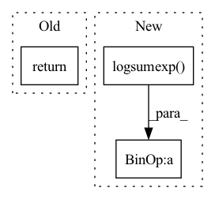

Pattern ID :260

Before Change
loss = -r_sp_m * self.gamma + logZ
return loss.mean()
After Change
logit_p = - ap * (sp - delta_p) * self.gamma
logit_n = an * (sn - delta_n) * self.gamma
loss = self.soft_plus(torch.logsumexp(logit_n, dim=0) + torch.logsumexp(logit_p, dim=0))
return loss
In pattern: SUPERPATTERN
Frequency: 3
Non-data size: 3
Instances
Fragment ID: 892045
Project Name: xialuxi/circleloss_face
Commit Name: 4ec0746af461dac7cbc632b62b0251dd56bc5b56
Time: 2020-05-13
Author: 297509086@qq.com
File Name: CircleLoss.py
M Class Name: SparseCircleLoss
N Class Name: SparseCircleLoss
M Method Name: forward(3)
N Method Name: forward(3)
M Parent Class: nn.Module
N Parent Class: nn.Module
M File Name: CircleLoss.py
N File Name: CircleLoss.py
M Start Line: 36
M End Line: 57
N Start Line: 32
N End Line: 47
'>
Before Change
def forward(self, logitsCondition: torch.Tensor, logitsJoint: torch.Tensor, step: int):
dLoss = self._loss(logitsCondition, torch.ones_like(logitsCondition)) + self._loss(logitsJoint, torch.zeros_like(logitsJoint))
if step % 2 == 0:
return dLoss
return -dLoss
After Change
// self._loss = nn.BCEWithLogitsLoss()
def forward(self, logitsCondition: torch.Tensor, logitsJoint: torch.Tensor, step: int):
expMean = (logitsJoint.detach().logsumexp(0) - log(len(logitsJoint)))
self._ema -= self._alpha * (self._ema - expMean)
loss = EMALoss.apply(logitsJoint, self._ema)
// dLoss = self._loss(logitsCondition, torch.ones_like(logitsCondition)) + self._loss(logitsJoint, torch.zeros_like(logitsJoint))
return (-logitsCondition.mean()) + loss
'>
Fragment ID: 892047
Project Name: xiaosu-zhu/mcquic
Commit Name: c82455f8eec854336ea002e002aabad3cfa077f1
Time: 2021-06-15
Author: xiaosu.zhu@outlook.com
File Name: src/mcqc/losses/mlm.py
M Class Name: InfoMaxLoss
N Class Name: InfoMaxLoss
M Method Name: forward(4)
N Method Name: forward(4)
M Parent Class: nn.Module
N Parent Class: nn.Module
M File Name: src/mcqc/losses/mlm.py
N File Name: src/mcqc/losses/mlm.py
M Start Line: 102
M End Line: 105
N Start Line: 122
N End Line: 126
'>
Before Change
)
)
return tight_loss, logs
def get_distortion(self, Y_hat, targets):
raise NotImplementedError()
After Change
// tightens bound using IWAE: log 1/k sum exp(loss). shape: [batch_size]
if n_z > 1:
rate = torch.logsumexp(rate, 0) - math.log(n_z)
distortion = torch.logsumexp(distortion, 0) - math.log(n_z)
else:
distortion = distortion.squeeze(0)
rate = rate.squeeze(0)
'>
Fragment ID: 892050
Project Name: yanndubs/lossyless
Commit Name: 0a24755494712f360cfbc0e8b8ac9f6907157997
Time: 2020-12-04
Author: yanndubois96@gmail.com
File Name: lossyless/losses.py
M Class Name: Loss
N Class Name: Loss
M Method Name: forward(4)
N Method Name: forward(4)
M Parent Class: nn.Module
N Parent Class: nn.Module
M File Name: lossyless/losses.py
N File Name: lossyless/losses.py
M Start Line: 35
M End Line: 53
N Start Line: 30
N End Line: 59